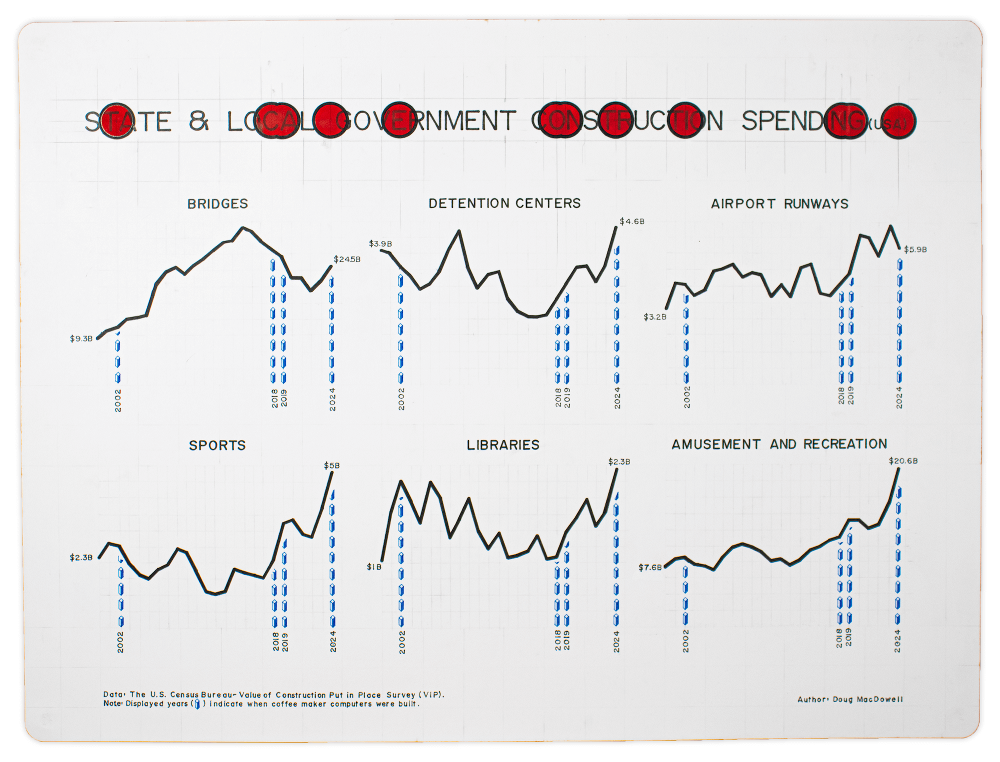
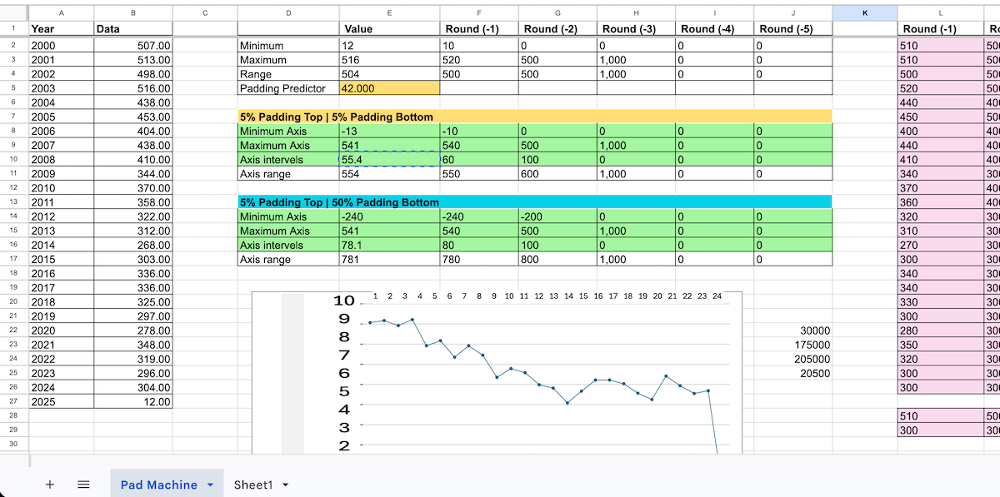

Curious 15 Year Gap
Hand-drawn data visualizations by artist Doug MacDowell
Description:
Seven hand drawn data visualizations, each containing six lines graphs (or sparklines) with data spanning 2000–2024. The graphs reference coffee-maker computers built in 2002, 2018, 2019, and 2024 (marked by blue monoliths) and focus on a curious 15 year gap of people creating these machines.
Each visualization is 18 x 24 inches and drawn by hand using a t-square, triangle, rulers, lettering kit, and templates. Rather than the 20 minutes a computer would take, each drawing requires 20–30 hours. These graphs are part of an art exhibition called Sparklines where these and other hand-drafted data visualizations accompany a coffee maker computer. The process for how to make these is documented in 50 Hours to Draw Some Lines.

A little behind the scenes content.
I never had to think much about "cusioning" or "padding" when creating line graphs until I made them by hand. I realized quickly that I needed a methodical way to calculate the cushioning for each sparkline. This screenshot is a tool I made in a spreadsheet where I could plug in the values for each year, and the tool would capture the range of data, and predict padding that would best compliment the line (5%? 10%?). It also created a template of my sparkline with interval values that helped plot my data according to my chosen grid format.
This is what the "pad machine" looks like. The spreadsheet is far to messy to share with anyone but myself.
